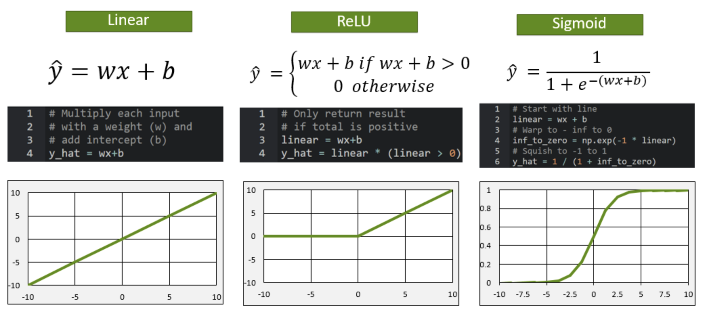
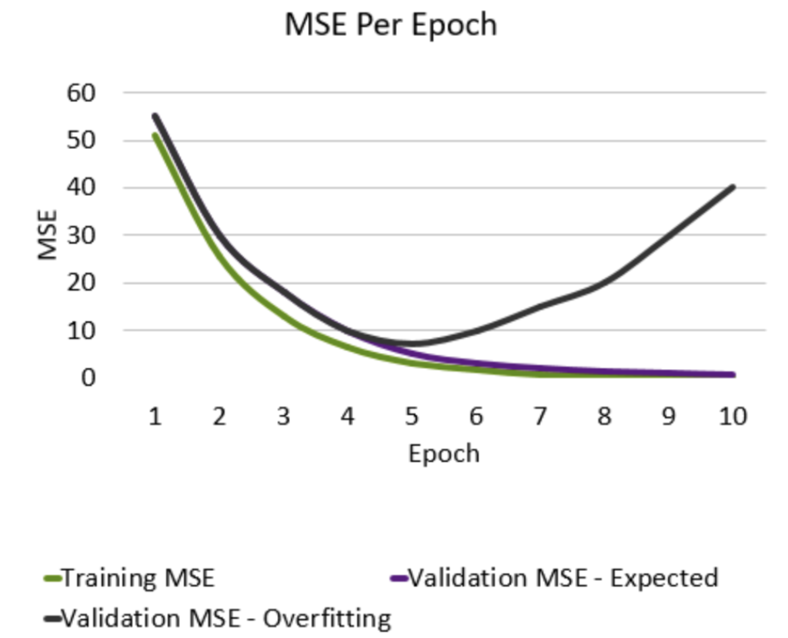

Source: NVIDIA - Fundamentals of Deep Learning Course
Basic understanding of Neural Network Structure
link: https://medium.com/@sarita_68521/basic-understanding-of-neural-network-structure-eecc8f149a23
The loss curve
- The Gradient - Which direction loss decreases the most
- The learning rate () - How far to travel
- Epoch - A model update with the full dataset
- Batch - A sample of the full dataset
- Step - An update to the weight parameters
Activation Functions
From Gemini AI - Activation functions in neural networks are mathematical equations applied to the output of a neuron, deciding whether the neuron should be activated and how strongly its signal is passed on to the next layer. They introduce non-linearity, allowing the network to learn complex relationships and make accurate predictions.

Training vs Validation Data
Aim: Avoid memorization
- Training Data - Core dataset for the model to learn on
- Validation Data - New data for model to see if it truly understands (can generalize)
- Overfitting - When model performs well on the training data, but not on the validation data. Ideally, the accuracy and loss should be similar between both datasets.

Clearing GPU Memory
import IPython
app = IPython.Application.instance()
app.kernel.do_shutdown(True)Processing through GPU
x_0_gpu = x_0_tensor.cuda()
x_0_gpu.deviceThe .cuda method will fail if a GPU is not recognized by PyTorch. In order to make our code flexible, we can send our tensor to the device we identified at the start of this notebook. This way, our code will run much faster if a GPU is available, but the code will not break if there is no available GPU.
x_0_tensor.to(device).device
out: device(type='cuda', index=0)
device = torch.device("cuda" if torch.cuda.is_available() else "cpu")
torch.cuda.is_available()
out: TrueDifference between test and validation datasets
links: https://machinelearningmastery.com/difference-test-validation-datasets/ https://kili-technology.com/training-data/training-validation-and-test-sets-how-to-split-machine-learning-data
A test data set is a separate sample, an unseen data set, to provide an unbiased final evaluation of a model fit. The test data set mirrors real-world data the machine learning model has never seen before. Its primary purpose is to offer a fair and final assessment of how the model would perform when it encounters new data in a live, operational environment.
The training data and validation data can play additional roles in model preparation. They can aid in feature selection, a process in which the most relevant or significant variables in the data are selected to improve the model performance. They can also contribute to tuning the model’s complexity, balancing fitting the data well, and maintaining a good level of generalization. The fit of the final model is a combined result from the aggregate of these inputs.
PyTorch Transforms
link: https://docs.pytorch.org/vision/stable/transforms.html
DataLoaders
If our dataset is a deck of flash cards, a DataLoader defines how we pull cards from the deck to train an AI model. We could show our models the entire dataset at once. Not only does this take a lot of computational resources, but research shows using a smaller batch of data is more efficient for model training.
For example, if our batch_size is 32, we will train our model by shuffling the deck and drawing 32 cards. We do not need to shuffle for validation as the model is not learning, but we will still use a batch_size to prevent memory errors.
The batch size is something the model developer decides, and the best value will depend on the problem being solved. Research shows 32 or 64 is sufficient for many machine learning problems and is the default in some machine learning frameworks, so we will use 32 here.
batch_size = 32
train_loader = DataLoader(train_set, batch_size=batch_size, shuffle=True)
valid_loader = DataLoader(valid_set, batch_size=batch_size)Difference between Deep Learning Training and Inference
link: https://blogs.nvidia.com/blog/difference-deep-learning-training-inference-ai/
Batch Normalization
Like normalizing our inputs, batch normalization scales the values in the hidden layers to improve training.
link: https://docs.pytorch.org/docs/stable/generated/torch.nn.BatchNorm2d.html other link: https://blog.paperspace.com/busting-the-myths-about-batch-normalization/ other link: https://stackoverflow.com/questions/39691902/ordering-of-batch-normalization-and-dropout
Dropout
Dropout is a technique for preventing overfitting. Dropout randomly selects a subset of neurons and turns them off, so that they do not participate in forward or backward propagation in that particular pass. This helps to make sure that the network is robust and redundant, and does not rely on any one area to come up with answers.
Flatten
Flatten takes the output of one layer which is multidimensional, and flattens it into a one-dimensional array. The output is called a feature vector and will be connected to the final classification layer.
Data Augmentation
In order to teach our model to be more robust when looking at new data, we’re going to programmatically increase the size and variance in our dataset. This is known as data augmentation, a useful technique for many deep learning applications.
The increase in size gives the model more images to learn from while training. The increase in variance helps the model ignore unimportant features and select only the features that are truly important in classification, allowing it to generalize better.
Transfer Learning
source: https://blogs.nvidia.com/blog/what-is-transfer-learning/
This deep learning technique enables developers to harness a neural network used for one task and apply it to another domain. Take image recognition. Let’s say that you want to identify horses, but there aren’t any publicly available algorithms that do an adequate job. With transfer learning, you begin with an existing convolutional neural network commonly used for image recognition of other animals, and you tweak it to train with horses.
Here’s how it works: First, you delete what’s known as the “loss output” layer, which is the final layer used to make predictions, and replace it with a new loss output layer for horse prediction. This loss output layer is a fine-tuning node for determining how training penalizes deviations from the labeled data and the predicted output.
Next, you would take your smaller dataset for horses and train it on the entire 50-layer neural network or the last few layers or just the loss layer alone. By applying these transfer learning techniques, your output on the new CNN will be horse identification.
Cross-Entropy Loss
source: https://gombru.github.io/2018/05/23/cross_entropy_loss/
Natural Language Processing (NLP)
Language is naturally composed of sequence data, in the form of characters in words, and words in sentences. Other examples of sequence data include stock prices and weather data over time. Videos, while containing still images, are also sequences. Elements in the data have a relationship with what comes before and what comes after, and this fact requires a different approach.
BERT
BERT, which stands for Bidirectional Encoder Representations from Transformers, was a ground-breaking model introduced in 2018 by Google.
BERT is simultaneously trained on two goals:
- Predict a missing word from a sequence of words
- Predict a new sentence after a sequence of sentences